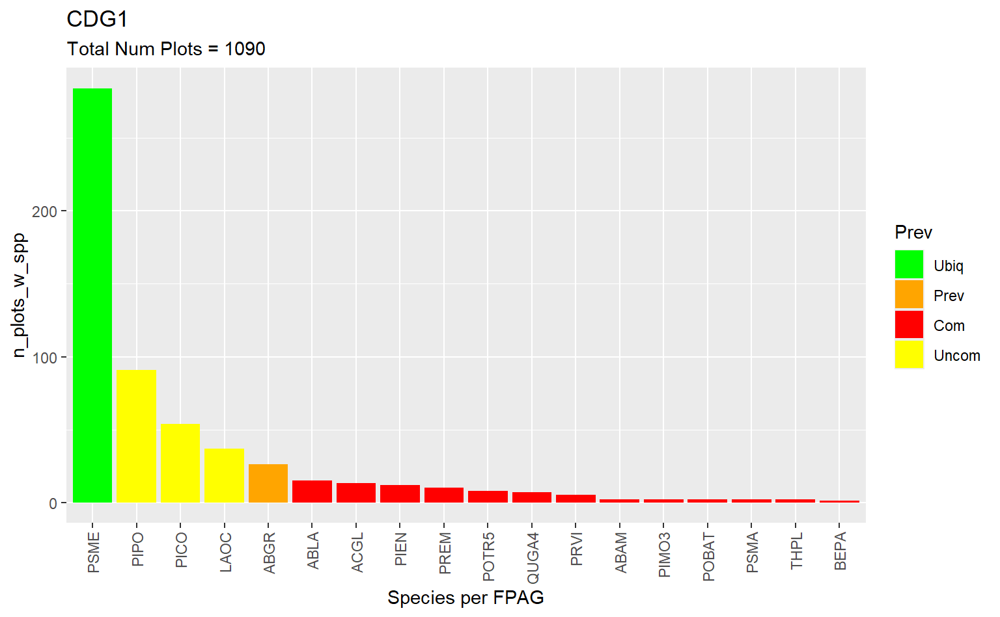
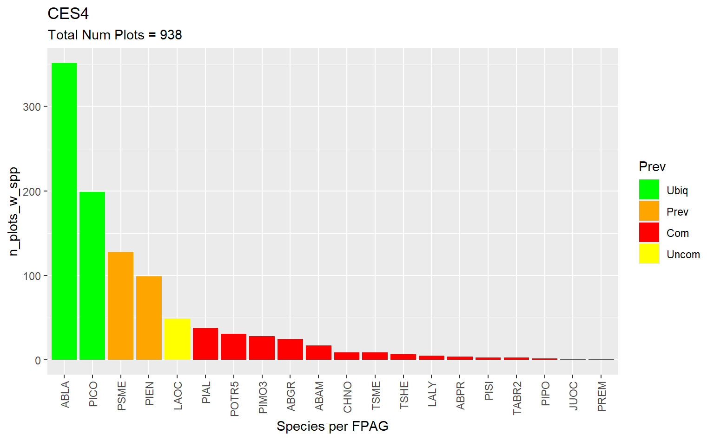
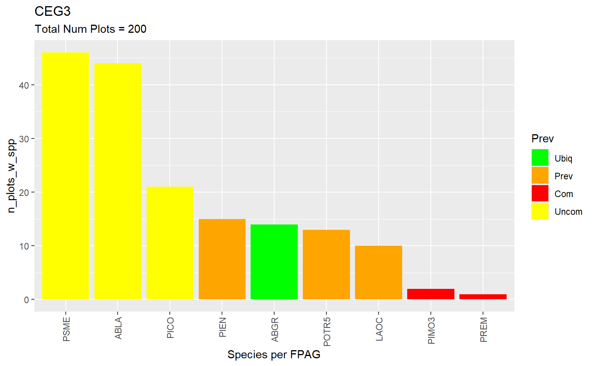
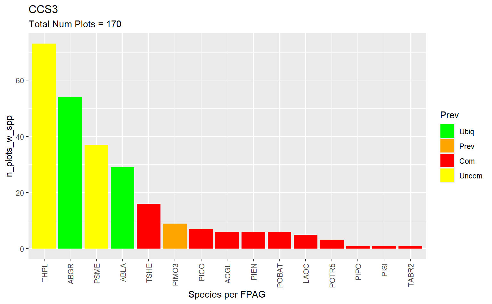
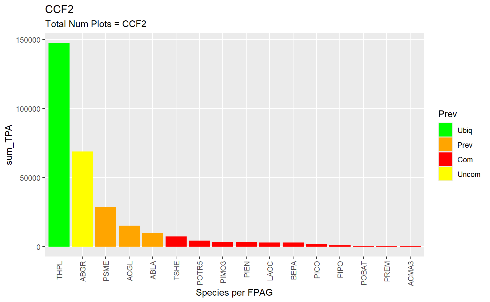
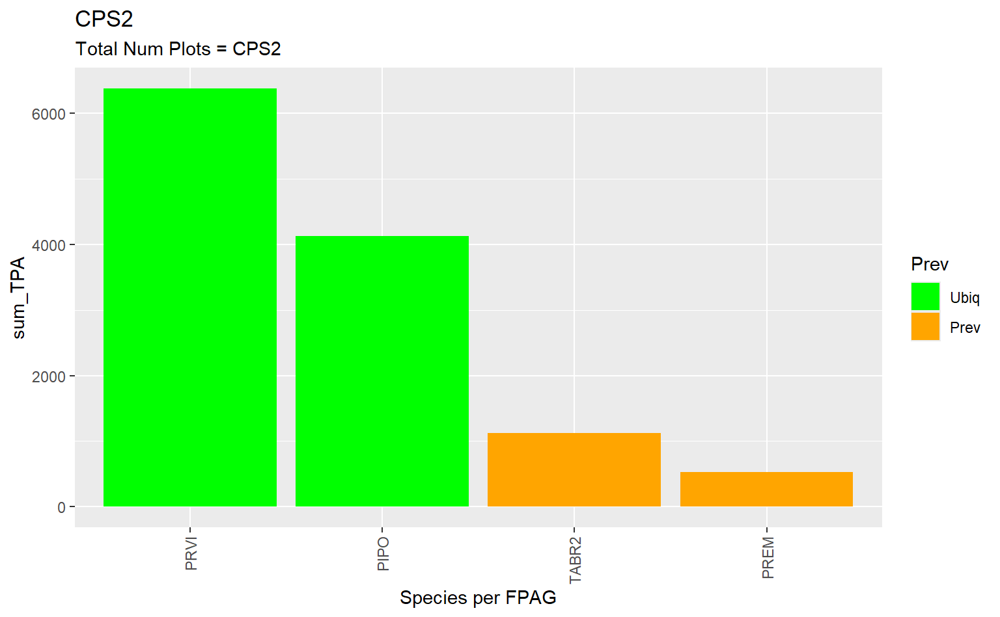
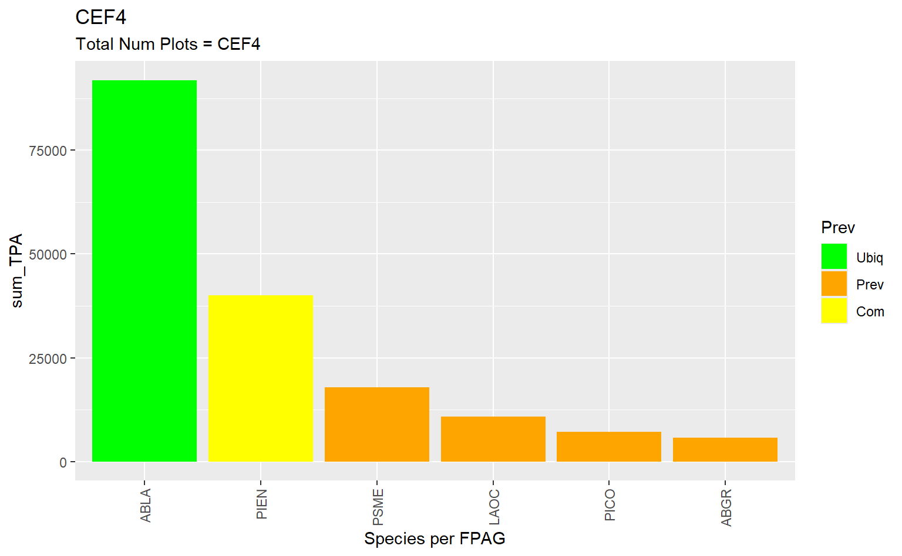
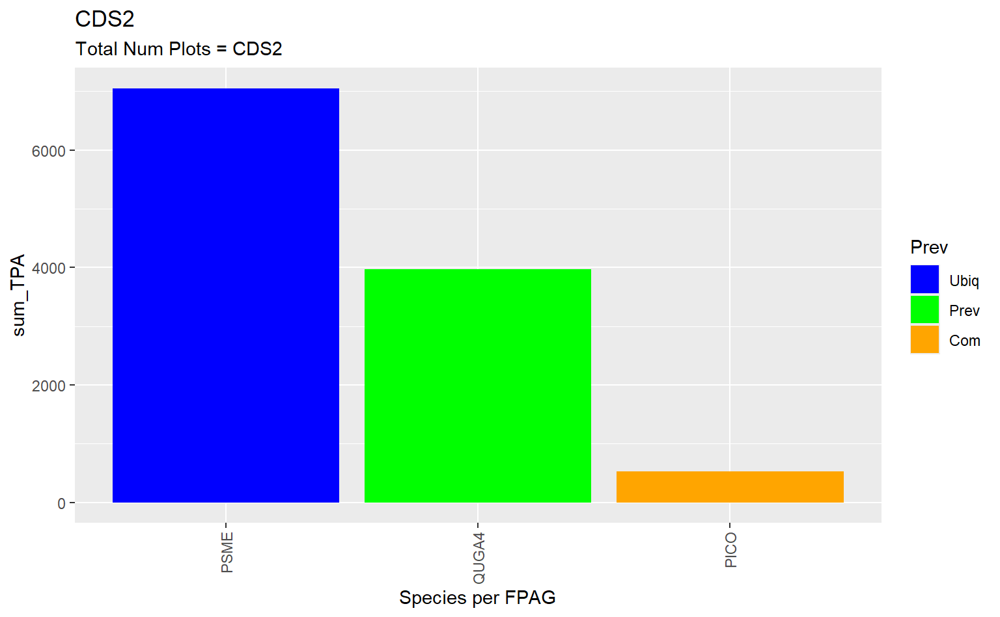
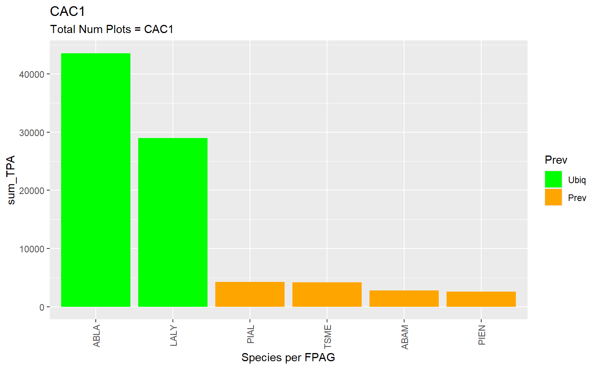

Take the k nn and make a distribution to get stochastic regen
The yai objects have the distances and nearest neighbors.
yai$neiDstTrgs is a matrix of distances between a target and the k references.
Pick from those nn to get stochastic regen.
Try to find the probability of regen in the RF tool, it may be from a different model.
I must have been thinking of something else. I cannot find the probability.
There could be something in the idea of making a probability out of the distribution of nearest references that have regeneration. Say, if there were 10 NN and one had regen, but the others didn’t, it would be a ten percent chance of regen. Then recompute the yai distances for the stands with regen, but only include stands with seedlings.
Can FPAG be a predictor in RF, it didn’t work in MSN. If so also try ecoregion.
It worked, and the imputed vs observed plots look pretty good.
It is better than the full set without FPAG as a predictor.
Check on using Climate water deficit?
Find the data, consider the possibilities, and try to use it.
Create some visualizations for seedling density by predictor.
done:
Make the FPAGs 3 digits, removing some specificity
At least in CDS6 vs CDS, it didn’t help much.
Add more data from eco-regions in the state and maybe further afield.
It doubled the number of plots available, but I only tested CDS
In both sets, about half the plots didn’t have seedlings.
It may be time to test more FPAGs.
I am set up in the imputation page to try adding FPAG as a predictor in RF. If I can use categorical in RF, PHYSCLCD would probably be a good one. to try.
The knn distribution is in the
Species per subplots per FPAG
Code
# Data tidying and accesslibrary(tidyverse, quietly = T)library(RSQLite)# library(readxl)# library(writexl)# yaImpute and related library(yaImpute)library(vegan)library(randomForest)# plots and tableslibrary(esquisse)library(knitr)# No sci-notation. options(scipen =999)
con <-dbConnect(RSQLite::SQLite(), "./attempt_032524.db")# dbListTables(con)tree <-dbGetQuery(con, "select * from FVS_TREEINIT_PLOT")dbDisconnect(con)seedling_densities <- tree |>filter(startsWith(TREE_CN, "S")) |>group_by(STANDPLOT_CN, SPECIES) |>summarise(TPA =sum(TREE_COUNT))
`summarise()` has grouped output by 'STANDPLOT_CN'. You can override using the
`.groups` argument.
Code
clean_na_cols <-function(df){ df <- df[, colSums(is.na(df)) <nrow(df)]}KEEP <-append(KEEP, "clean_na_cols")tree <-clean_na_cols(tree)con <-dbConnect(RSQLite::SQLite(), "C:\\RxFire\\Data\\_FIADB_WA.db")# Pulling in the species reference tableplants_ref <-dbGetQuery( con, "select SPECIES_SYMBOL, SPCD, COMMON_NAME, W_SPGRPCD from REF_SPECIES" )plant_gr_ref <-dbGetQuery( con, "select SPGRPCD, NAME from REF_SPECIES_GROUP" )dbDisconnect(con)# Cleaning it upplants_ref <- plants_ref |>rename(SPGRPCD = W_SPGRPCD, SYMBL = SPECIES_SYMBOL)plants_ref <-left_join(plants_ref, plant_gr_ref, by =join_by(SPGRPCD))plants <- plants_ref |>select(SYMBL, SPCD)seedling_densities <- seedling_densities |>mutate(SPECIES =as.numeric(SPECIES))# Getting plant codes for seedlingsseedling_densities <-left_join(seedling_densities, plants, join_by("SPECIES"=="SPCD"))# Removing an extra col. seedling_densities <- seedling_densities |>select(-c(SPECIES))
Look up the .groups argument. I always get that error when summarizing by two variables.
This will be the number of species per fpag for the fpags that are in the first set used in RF. It’s the 50 FPAGs with the most subplots. Off the top of my head it’s about 60 subplots to 2400 subplots.
Code
t <- fpas |>select(STANDPLOT_CN, FPAG)t <-left_join(t, seedling_densities, by =join_by(STANDPLOT_CN))sum(is.na(t$TPA))
11115 of 29124 rows in t are NAs. I think those are the rows where there are no seedlings.
Plots with emtpy subplots.
There are 50 graphs for 50 FPAGs with 22721 subplots in total. The bars represent the number of plots that have a given species in that FPAG. They’re small, but grey is for empty subplots, blue is for ubiquitous trees within that fpag, then green, orange, yellow, red for prevalent to rare. The cutoffs for these categories are 2.5, 10, 25, 55 percent of seedlings in the FPAG.
These categories are for prevalence per FPAG. Some of the other plots I made are by overall prevalence in the whole set.
Code
m <-1n <-50# # num_plts[num_plts$FPAG %in% fpags[m:n],] |> arrange(desc(n_plots))for (i in fpags[m:n]) {# print(i) p <- t2[t2$FPAG == i,] |>ggplot() +aes(x =reorder(SYMBL, desc(n_plots_w_spp)), y = n_plots_w_spp, fill = color) +geom_col(show.legend =FALSE) +scale_fill_identity(labels =c('Ubiq', 'Prev', 'Com', 'Uncom', 'Rare', "Empty"), guide ="legend") +guides(fill =guide_legend(title ="Prev")) +scale_x_discrete(guide =guide_axis(angle =90)) +labs(title = i,subtitle =str_c("Total Num Plots = ", num_plts[num_plts$FPAG == i, 2])) +xlab("Species per FPAG")print(p)}
Plots without empties
This is the same as before, but I removed the empty plots to see the actual species per fpag.
Code
m <-1n <-50# num_plts[num_plts$FPAG %in% fpags[m:n],] |> arrange(desc(n_plots))for (i in fpags[m:n]) {# print(i) p <- t2[t2$FPAG == i,] |>filter(SYMBL !="EMTY") |>ggplot() +aes(x =reorder(SYMBL, desc(n_plots_w_spp)), y = n_plots_w_spp, fill = color) +geom_col() +scale_fill_identity(labels =c('Ubiq', 'Prev', 'Com', 'Uncom', 'Rare', "Empty"), guide ="legend") +guides(fill =guide_legend(title ="Prev")) +scale_x_discrete(guide =guide_axis(angle =90)) +labs(title = i,subtitle =str_c("Total Num Plots = ", num_plts[num_plts$FPAG == i, 2])) +xlab("Species per FPAG")print(p)}




TPA per Species per FPAG
Summing all the TPAs per FPAG and Species.
Code
tt <- t |>drop_na() |>group_by(FPAG, SYMBL) |>summarize(sum_TPA =sum(TPA))
`summarise()` has grouped output by 'FPAG'. You can override using the
`.groups` argument.
These will look almost identical to the Spp per subplot per FPAG ones, but now they show the total number of trees.
Code
m <-1n <-12# num_plts[num_plts$FPAG %in% fpags[m:n],] |> arrange(desc(n_plots))for (i in fpags[m:n]) {# print(i) p <- tt[tt$FPAG == i,] |>filter(SYMBL !="EMTY") |>ggplot() +aes(x =reorder(SYMBL, desc(sum_TPA)), y = sum_TPA, fill = color) +geom_col() +scale_fill_identity(labels =c('Ubiq', 'Prev', 'Com', 'Uncom', 'Rare', "Empty"), guide ="legend") +guides(fill =guide_legend(title ="Prev")) +scale_x_discrete(guide =guide_axis(angle =90)) +labs(title = i,subtitle =str_c("Total Num Plots = ", unique(tt[tt$FPAG == i, 1]))) +xlab("Species per FPAG")print(p)}

spp prevalence
This is not to be confused with what I did in a different document using quantiles. This is in an attempt to refine that, so that I am not adding garbage when/if I run the RF by FPAG. I want to know which species should be ignored in each FPAG.
Here is the distribution of percent by all spp. Left to right, I am zooming in.
These plots do not contain species that represent less than 2.5% of the total TPA for a given FPAG. They are arranged in order of decreasing number of plots per FPAG. Species are on the x axis and the sum of Trees per acre for that species is on the y.
Code
t5 <- t4 |>filter(percent >2.5)m <-1n <-50for (i in fpags[m:n]) {# print(i) p <- t5[t5$FPAG == i,] |>filter(SYMBL !="EMTY") |>ggplot() +aes(x =reorder(SYMBL, desc(sum_TPA)), y = sum_TPA, fill = color) +geom_col() +scale_fill_identity(labels =c('Ubiq', 'Prev', 'Com', 'Uncom', 'Rare'), guide ="legend") +scale_x_discrete(guide =guide_axis(angle =90)) +guides(fill =guide_legend(title ="Prev")) +labs(title = i,subtitle =str_c("Total Num Plots = ", unique(t5[t5$FPAG == i, 1]))) +xlab("Species per FPAG")print(p)}




saving prev by fpag
r <-2.5u <-10c <-25p <-55sp_prev_df <- t4 |>mutate(prev =ifelse(percent < r, "rare", "null"),prev =ifelse(percent >= r & percent < u, "uncom", prev),prev =ifelse(percent >= u & percent < c, "com", prev),prev =ifelse(percent >= c & percent < p, "prev", prev),prev =ifelse(percent >= p, "ubiq", prev), color =ifelse(percent < r, "red", NA),color =ifelse(percent >= r & percent < u , "orange", color),color =ifelse(percent >= u & percent < c , "yellow", color),color =ifelse(percent >= c & percent < p , "green", color),color =ifelse(percent >= p, "blue", color))# save(sp_prev_df, file = "dfs_0403/sp_prev_df.Rdata")